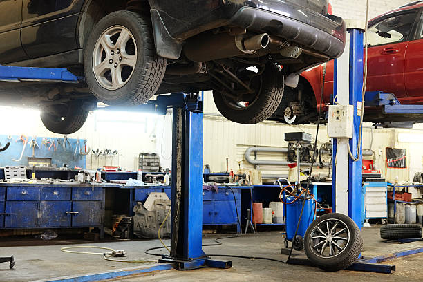

Top tips for choosing a fast auto body repair shop in Garland, TX
Posted by on 2024-05-23
When it comes to choosing a fast auto body repair shop in Garland, TX, there are a few key tips to keep in mind. With so many options available, it can be overwhelming trying to find the right shop for your needs. To help make the process easier, here are some top tips to consider when selecting an auto body repair shop in Garland.
First and foremost, it's important to do your research. Take the time to read reviews and ask for recommendations from friends and family members who have had experience with auto body repair shops in the area. This will give you a good idea of the reputation of different shops and help you narrow down your choices.
Next, consider the services offered by each auto body repair shop. Some shops may specialize in certain types of repairs or only work on specific makes and models of vehicles. Make sure that the shop you choose has experience working on your type of vehicle and can provide all the services you need.
Another important factor to consider is the speed at which the shop can complete repairs. If your vehicle is in need of immediate attention, you'll want to choose a shop that can get you back on the road as quickly as possible. Look for a shop that offers fast turnaround times without sacrificing quality.
In addition, make sure to inquire about warranties and guarantees offered by each auto body repair shop. A reputable shop should stand behind their work and offer some form of warranty on repairs. This will give you peace of mind knowing that your vehicle is in good hands.
Finally, don't forget to consider pricing when choosing an auto body repair shop. While cost shouldn't be the only factor you consider, it's still important to find a shop that offers fair and competitive prices for their services.
By following these top tips for choosing a fast auto body repair shop in Garland, TX, you can ensure that your vehicle receives high-quality service at a reasonable price. With careful consideration and research, you'll be able to find a reliable shop that meets all your needs and gets you back on the road quickly.